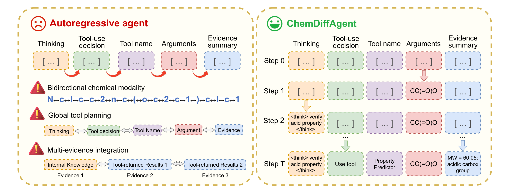
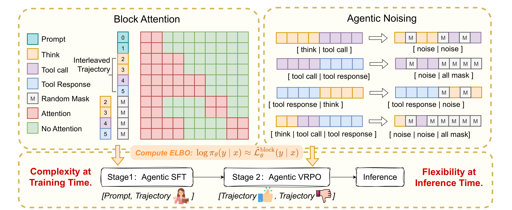
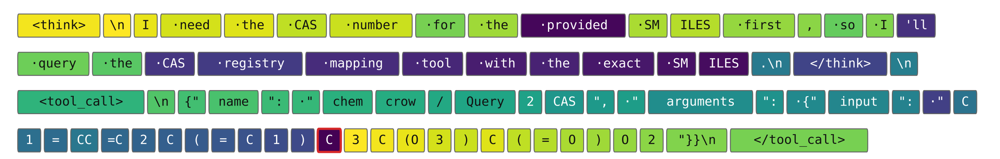
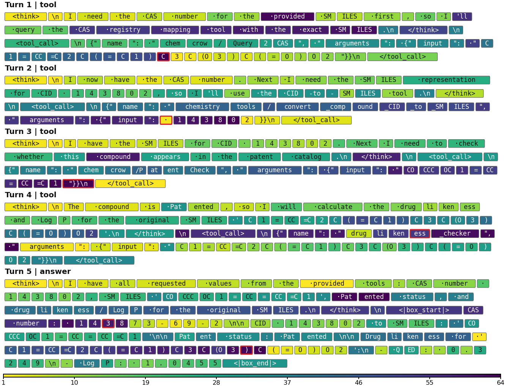
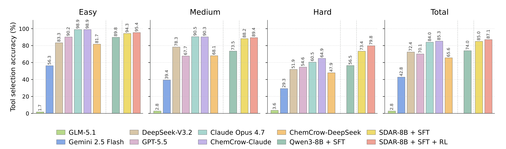

ChemDiffAgent：用掩码扩散协调化学推理、工具调用与证据整合
论文原文 ↗论文：Masked Diffusion Language Agents for Tool-Integrated Chemical Reasoning，Mengdi Liu、Chenghao Jia、Hong Chang、Shiguang Shan，2026。arXiv｜｜作者代码
化学工具链需要彼此协调的决定
化学智能体经常要先解析分子标识符，再查性质、预测反应，最后汇总多个工具的结果。工具名、参数格式、分子字符串和任务目标必须匹配；SMILES 中的分支、键与环编号也彼此关联。常见自回归模型按从左到右的顺序逐个生成文字，较早确定的工具选择难以利用后面才形成的参数约束，容易使局部决定影响整条执行过程。
ChemDiffAgent 用掩码扩散重新组织推理与工具使用。它把待生成的一段内容留成空位，再通过多轮去噪填入，让工具名、分子参数、控制字段与推理在同一块上下文中协调形成。作者再以监督微调和轨迹偏好优化训练工具能力，并构建涵盖六类化学任务的单轮与多轮基准。

原图 Fig.1。左侧依次写定推理、工具决策、工具名、参数和证据；右侧按不同顺序补全这些字段。乙酸 SMILES 的示意展示分子输入、工具选择与性质摘要如何相互配合。
分块生成怎样接上外部工具
底座 SDAR-8B 有约 80 亿参数。它按块推进生成，同一块内部各位置可以相互利用已确定的内容，块与块之间保留先后关系。主设置每块 64 个 token、64 步去噪；token 是模型处理的文字片段，可以是一个词，也可以是 SMILES 的一部分。
每轮运行包含模型推理、结构化调用和工具回传。模型先生成工具名与参数，执行器据此运行工具，真实返回结果进入历史上下文，再支持下一轮推理。块内灵活顺序让模型可以先确定明确的分子或格式，再补齐更依赖上下文的选择。
训练针对这一交互方式设计遮罩。历史工具响应作为已有观察保留；若工具调用与其未来响应落在同一双向块，未来响应被全部遮住。训练损失计算在模型生成的推理与调用位置，使模型学习在当前可用信息下形成动作。

原图 Fig.2。左侧为块注意力，右侧为模型侧内容与工具响应的遮罩方式；下方将监督微调、偏好优化和推理连接起来。历史观察提供条件，尚未返回的响应以掩码处理。
第一阶段监督微调 SFT 使用教师模型完成的化学轨迹，保留答案正确、过程完整、调用及参数符合协议的样本。学生通过还原被遮住的模型侧文字，学习多步推理和可执行格式。文中的 Agentic ELBO 是对这些位置还原质量的评分，用来近似轨迹概率。
第二阶段 VRPO，即减小方差的偏好优化，把同一问题的失败轨迹与经工具执行确认的正确轨迹配对，推动模型偏向成功路径。扩散评分包含随机遮罩，因此作者对多个采样评分取平均，并让当前模型和固定参考模型使用相同受扰输入，以减小两者差值的随机波动。
理论分析进一步解释顺序灵活性的价值：不同位置既有不同预测难度，也有不同出错后果；先确定能提供信息的部分，可以为其余决定建立更好的条件。训练中的多种填空状态，为推理时这种非固定顺序提供学习基础。
一个实际调用怎样形成并继续运行
图 4 的输入是分子 SMILES C1=CC=C2C(=C1)C3C(O3)C(=O)O2。智能体选择查询 CAS 登记号，构造 chemcrow/Query2CAS，并把该字符串放入 arguments.input。这份结构化对象将语言推理转成可执行动作：执行器读取名称，定位工具，再把参数交给它。
解码颜色显示，调用边界和参数框架较早形成，部分 SMILES 位置较晚确定。模型因而能够利用同一块中已稳定的行动结构，继续补充分子细节。

原图 Fig.4。颜色由浅到深表示较早到较晚确定的 token，红框为各块末尾。工具调用格式与分子参数交错完成，完整色标见下图。
完整实例还有 CID 143802 转 SMILES、专利目录检查，以及原始分子的类药性与 logP 计算。CID 是 PubChem 编号，QED 是组合多个分子性质的类药性指标。不同查询分支产生的中间结果进入历史，最后汇总成包含多个字段的回答，展示从分子输入、工具动作到信息整合的全过程。

原图 Fig.5。四轮工具调用依次取得所需信息，最终生成汇总答案；底部色标对应 1–64 步去噪。图中同时包含原始 SMILES 查询和给定 CID 的转换分支。
用什么任务检验这种协调能力
作者从分子指令、工具任务、分子优化和反应数据构建六类问题：组成推断、名称转换、性质预测、逆合成、分子优化和正向合成。单轮样本保留原始化学输入与参考结果，并执行核心工具核对答案；结构按规范化 SMILES 比较，分子式统一元素计数，标量采用数值容差。
多轮样本从工具依赖图构造。若一个工具输出能作为另一工具输入，两者连边；作者采样包含核心工具的子图，改写问题以覆盖这些依赖，再执行工具链并检查输入、输出和最终答案。根据标准调用长度分为 2 轮、3–5 轮、6–7 轮三档。最终正确率由 GPT-4o 对照参考答案评判，工具选择分数则统计标准图中要求的工具名有多少被调用。
相同训练条件下，扩散智能体取得约二十个百分点的提升
主要对照是参数规模相同、使用相同 SFT 轨迹、训练轮数、上下文长度和工具接口的 Qwen3-8B。SDAR-8B 由它持续预训练而来，便于比较两种生成范式在化学工具轨迹上的表现。
单轮任务中，自回归基线正确率为 69.1%，扩散模型加 SFT 为 89.0%，提高 19.9 个百分点；多轮任务从 44.0% 提高到 62.3%，提高 18.3 个百分点。之后加入 VRPO，单轮和多轮进一步达到 91.8% 与 64.6%。两阶段训练使模型既学会执行协议，也从成功与失败路径中改善决策。
与大型模型比较，单轮 91.8% 与 Claude Opus 4.7 的 90.9% 相近；多轮 64.6% 高于 GPT-5.5 的 61.1%，Claude Opus 4.7 则为 72.8%。在需要 6–7 轮调用的 Hard 组，ChemDiffAgent 与 Claude 同为 44.9%。这展示了一个专门训练的 8B 模型在化学工具任务中的竞争力。

原图 Fig.3。四组柱形为 Easy、Medium、Hard 和总体结果，纵轴统计标准工具名的覆盖比例。最终模型总体为 87.1%，Hard 为 79.8%，显示长链中仍能覆盖较多所需计算环节。
工具选择与执行长度也体现改进：Hard 组的工具覆盖从自回归基线 56.5% 提高到 79.8%；需要 7 轮的任务，模型平均执行 7.01 轮，更贴近标准依赖长度。作者的行为实例进一步展示了不同工具之间的切换、多源结果的结构化汇总，以及在后续性质计算前校正中间分子的过程。
ChemDiffAgent 将化学工具使用视为一组相互约束的决定，通过块内灵活解码、面向工具轨迹的监督和偏好训练共同优化。它为科学智能体提供了另一种组织方式：在动作执行前协调分子与格式，在真实观察返回后继续推理，再把多工具证据整合为答案。
原始摘要完整中文翻译
为复杂化学任务设计集成工具的推理智能体系统，仍然是一项基础性挑战。尽管近期的化学智能体通过集成外部工具展现出有前景的性能，它们仍建立在自回归范式之上，受到因果注意力和从左到右生成方式的内在限制。因此，它们往往难以处理双向的分子理解、全局协调的工具规划以及多源证据整合。为应对这一挑战，我们提出 ChemDiffAgent，这是首个用于工具集成化学推理的掩码扩散语言智能体。它将化学推理重新表述为对交错排列的推理与工具使用轨迹进行迭代去噪，使工具使用决策能够在完整轨迹上下文中被共同确定，从而更好地使智能体的决策边界与其知识边界相匹配。我们进一步分析了这一范式如何通过训练时更困难的填空子问题，以及推理时灵活的任意顺序解码，促进智能体推理。随后，我们开发了一个两阶段后训练框架，包括智能体监督微调和减小方差的偏好优化，以增强工具使用与推理能力。我们还构建了一个综合基准，覆盖单轮和多轮工具使用场景中的六项化学任务。在相同预算与评价条件下，ChemDiffAgent 持续优于自回归智能体，总体提升约为 20%。值得注意的是，我们的 8B 模型达到了与参数规模明显更大的前沿模型相当、在某些情况下甚至更优的性能，例如 GPT 5.5 和 Claude Opus 4.7。代码见 https://github.com/bilemond/ChemDiffAgent。